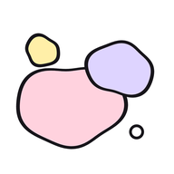

它是做什么的
想到一个点子但现在没空做？在「浮想」里写一句话就存好了。灵感会变成彩色的泡泡，在池子里慢慢飘；你标了「想做」的会扭来扭去，重要的类别飘在最上面。等你有时间了，打开就能找到。
Got an idea but no time for it now? Write one line in Fuxiang and it's saved. Ideas become soft coloured bubbles drifting in a pond; the ones you mark "want to do" wiggle, and your most important categories float to the top.
常见问题
我的灵感存在哪里？会上传吗？
只存在你自己的 iPhone 上，不会上传。详见隐私政策。
换手机或删了 App，灵感还在吗？
删除 App 会删掉里面的灵感。请先在「更多 → 导出备份」里保存一份，新手机上用「更多 → 导入备份」就能找回来。
怎么改类别的先后顺序？
「更多 → 类别排序」，按住左边的小点点上下拖动。
怎么给一个灵感换类别？
在漂浮视图里按住泡泡不动一会儿，把它拖到上面的类别标签上。
为什么没有声音？
在「更多」里打开声音。如果手机侧面的静音开关打开了，也会听不到。
请我喝杯咖啡

如果「浮想」帮你留住了几个好点子，可以用微信扫一扫，请我喝杯咖啡。谢谢你！
If Fuxiang helped you keep a few good ideas, you can buy me a coffee by scanning the WeChat code. Thank you!
联系我
（在这里写你的联系邮箱，例如 hello@example.com）
(Put your contact email here.)